Tutorial
on Palette Customization in Papyrus Version 1.0

Tutorial
on Palette Customization in Papyrus Version 1.0
|
|
Papyrus Tutorial:
How to customize a palette in Papyrus?
|
Editor |
Scott Uk-Jin Lee, CEA LIST |
|
Status |
Final version |
|
Version number |
1.0 |
|
Date of preparation |
2010-05-07 |
|
Editor name (first/last name) |
Company |
|
Initial |
|
Scott Uk-Jin Lee |
CEA LIST |
SL |
|
Authors name (first/last name) |
Company |
|
Initial |
|
Hubert Dubois |
CEA LIST |
HD |
|
Version |
Date |
Reasons |
|
1.0 |
10/05/10 |
Initial contribution. |
|
|
|
|
|
|
|
|
|
|
|
|
|
|
|
|
Authors 2
Revision chart and history log 3
Table of contents 4
The purpose of this document is to provide a tutorial for Papyrus users and developers, explaining the followings:
how to customize a palette in Papyrus
how to apply customized palette in Papyrus plug-ins
A palette is a collection of UML elements available for a particular diagram. It is located on the right hand side of the Papyrus diagram editor as shown below. The palette allows convenient construction of a particular UML diagram.
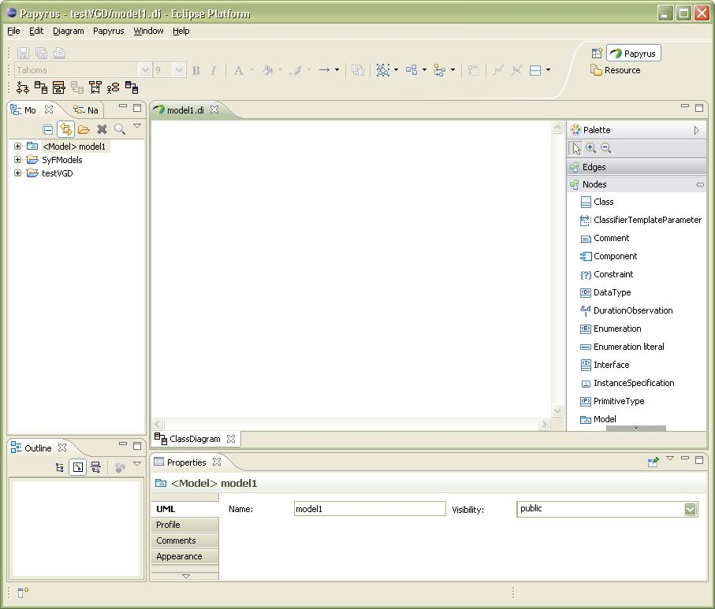
Right click on the palette toolbar and select 'Customize...'
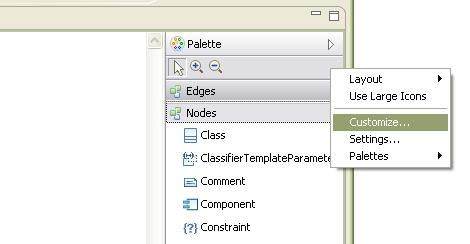
 The
'Customize Palette' pop-up appears. Select 'Create a new local
Palette' icon as indicated below.
The
'Customize Palette' pop-up appears. Select 'Create a new local
Palette' icon as indicated below.

The 'Local Palette Information' pop-up is displayed. Type the name of the new Local Palette to be customized and click 'Next'.
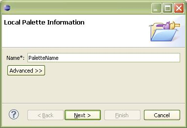
The customization menu for the new Local Palette then appears as shown below. This menu allows customize the Local Palette with drawers, separators and UML elements. The UML elements can be renamed and assigned with custom icons.
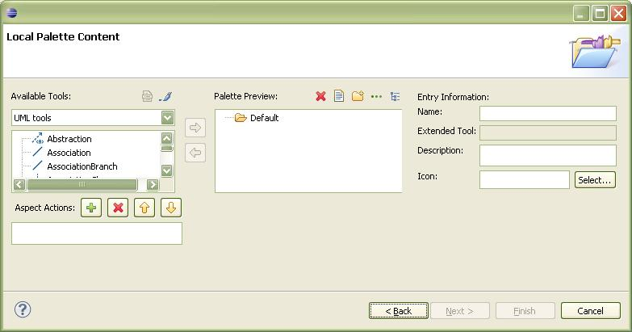
Create a new drawer with the indicated button as shown below. When the 'Dialog Information Page' pop-up appears, type the name of the new drawer and click 'Finish'. Similarly, appropriate buttons can be utilized to rename or remove the drawer.
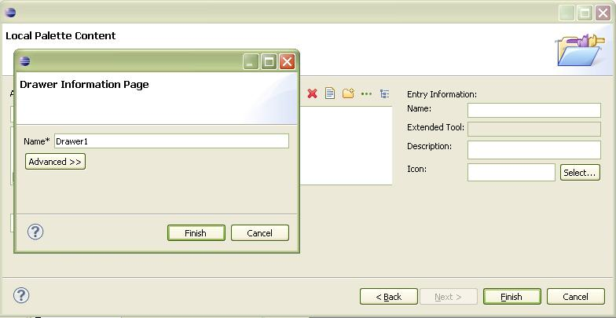

Add appropriate elements to the highlighted drawer in the local Palette by selecting the element to be added and clicking the right-arrow as shown below.
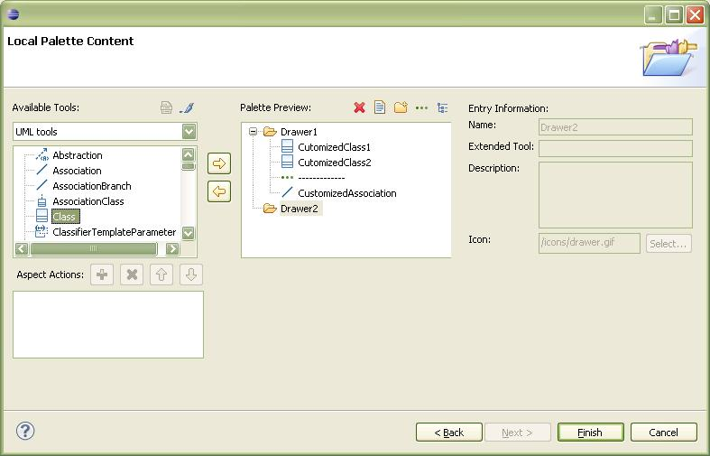
Customize name, description and icons for the added elements by selecting the added element and changing the information on the text fields of 'Entry Information:' as shown below.
 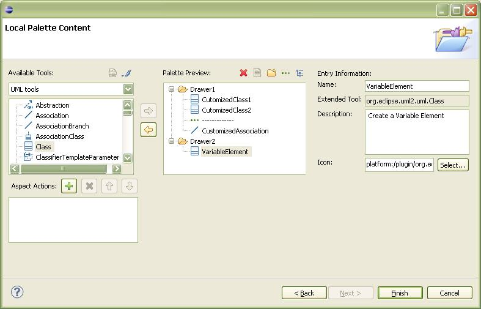
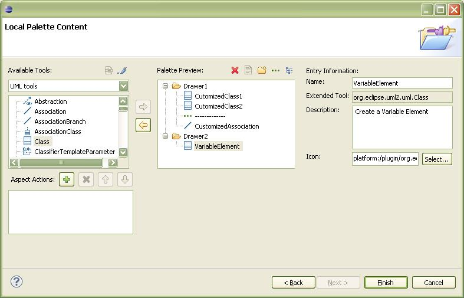
Add separators between elements in a drawer if necessary by selecting the element and clicking the indicated button as shown below. Note that the separator will be created below the selected element.

Customize the added elements with profile by applying stereotype to the element. First, click on the indicated button and select 'Set list of applied stereotypes'.
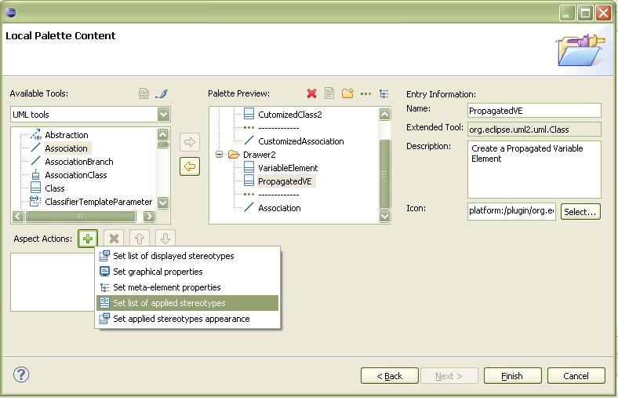
Then, apply stereotype to the element by using the button indicated below and selecting the appropriate stereotype from the 'Stereotype selection' pop-up.

*
Note: The profile must be applied on the model that consists of the
diagram with the palette to be customized prior to applying the
stereotype.
When the stereotypes to be applied are selected click 'ok'. The applied stereotypes are displayed as indicated below.
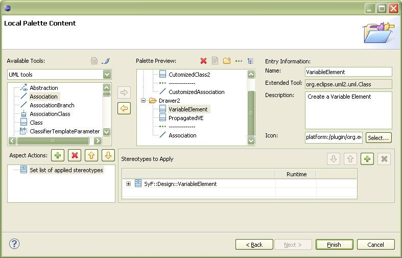
Add all the elements and apply appropriate stereotypes to complete the palette customization and click 'finish' button. Then the 'Customize Palette' pop-up reappears as shown below. Select only the palette to be displayed, then click 'ok'.

The palette customization is successfully finished indicating that the customized palette appears in the diagram editor as indicated below.
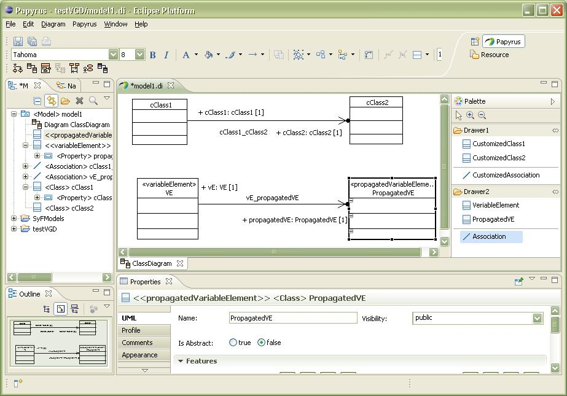
Once the palette is customized, go to the Papyrus workspace folder and navigate to the '\.metadata\.plugins\org.eclipse.papyrus.diagram.common' folder as shown below.
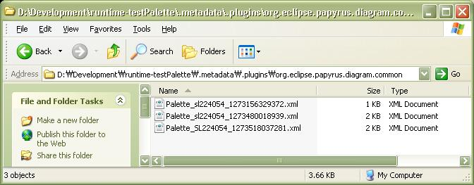Copy the XML file containing the palette customization information which has the name in the form of 'Palette_[UserName]_[numbers].xml'. (Note: XML file is created every time the new local palette is created for customization. So, copy the correct XML file that you want.)
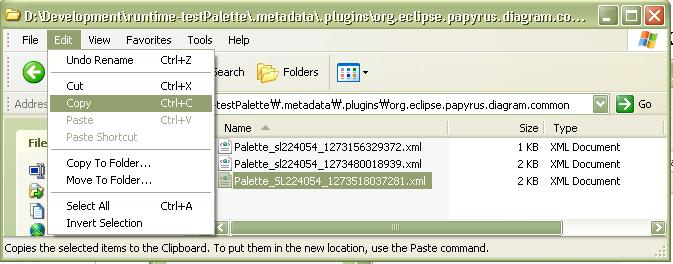In the plug in that you want to apply customized palette, create folder with the name 'palettes'. In the created folder, paste the copied XML file and rename the file with '[Name].Palette.xml' format.

Open 'plug-in.xml' file. If the 'plug-in.xml' file is not yet generated, open 'MANIFEST.MF' file from 'META-INF' folder. Then, go to the 'dependencies' tab and click 'add' button to add required plug-ins as shown below.

When 'Plug-in Selection' pop up appears as shown below, add 'org.eclipse.papyrus.diagram.common' plug-in as shown below.
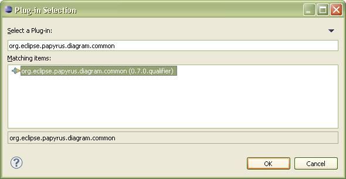Similarly, go to the 'extension' tab and click 'Add' button. When the 'New Extension' pop-up appears as shown below, type 'paletteDefinition' at the 'Extension Point filter:' text field. Select 'org.eclipse.papyrus.diagram.common.paletteDefinition' and click 'Finish'.
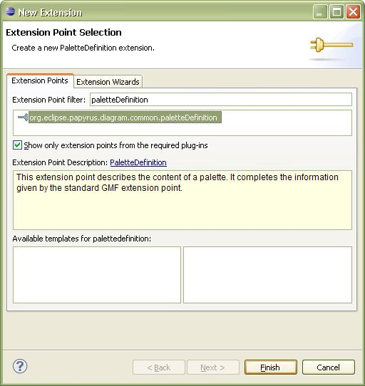Then the extension element is added under the extension point as shown below. Click extension element and set its 'name' and 'ID'. Also, set the 'path' to the path of the custom palette XML file, '/palettes/paletteName.Palette.xml'. For the 'class' setting, browse 'org.eclipse.papyrus.diagram.common.service.PluginPaletteProvider' class and select. For the 'icon' setting, eclipse icon can be reused by typing location of the Eclipse icon which is 'platform:/plugin/org.eclipse.gmf.runtime.diagram.ui/icons/group.gif'.
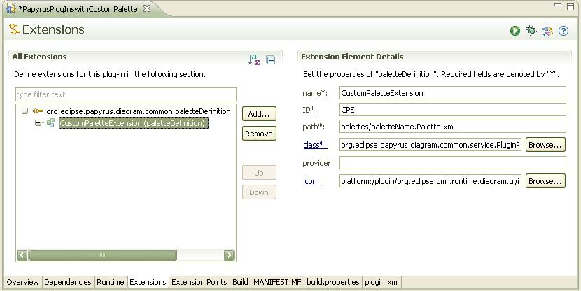Expand 'paletteDefinition' extension element, and click on the 'Priority' as indicated below. Then, set appropriate priority on the 'Extension Element Details' column.


* Note: When the elements in the custom palette is shared with other palettes in the diagram editor, only the palette with higher priority will display the elements under its drawer. So, make sure to set the priority appropriately for the elements to appear in the desired palette.
Right click on the added 'paletteDefinition' Extension and add new editor as shown below.

Select the newly added editor and set appropriate 'id' of the editor where the custom palette is to be applied to. For example, 'org.eclipse.papyrus.diagram.clazz' for the class diagram as shown below.
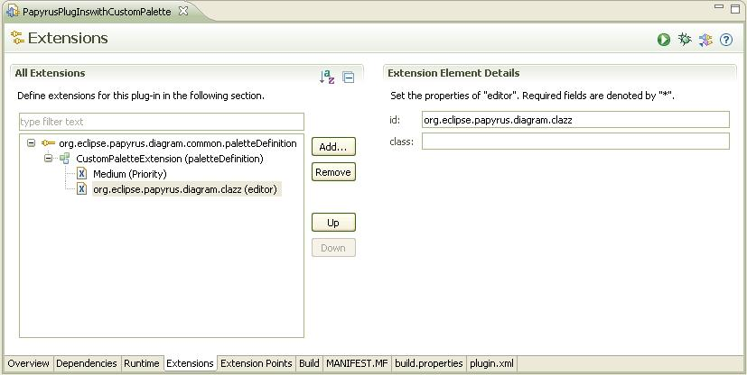Now when the plug-in is launched, the custom palette automatically appears for the selected diagram editor. For example, the custom palette for class diagram editor appears as shown below.
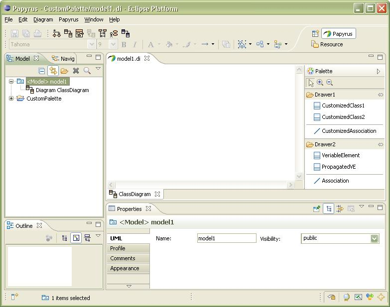Why can I not see the stereotypes applicable to the added elements when customizing a palette?
This is because the profile, where the stereotypes are defined, is not applied to the model. Apply appropriate profile to the model that consists of the diagram with the palette to be customized. Then, the stereotype will be accessible during the palette customization.
Why are the customized elements do not appear in the customized palette when the palette customization is applied to a Papyrus plug-in?
This is because the priority of the customized palette is lower than other palettes of the selected diagram editor. Apply higher priority to the customized palette through the 'paletteDefinition' extension. (refer to 8 in page 15)
N/A.
2009 The
Papyrus Consortium